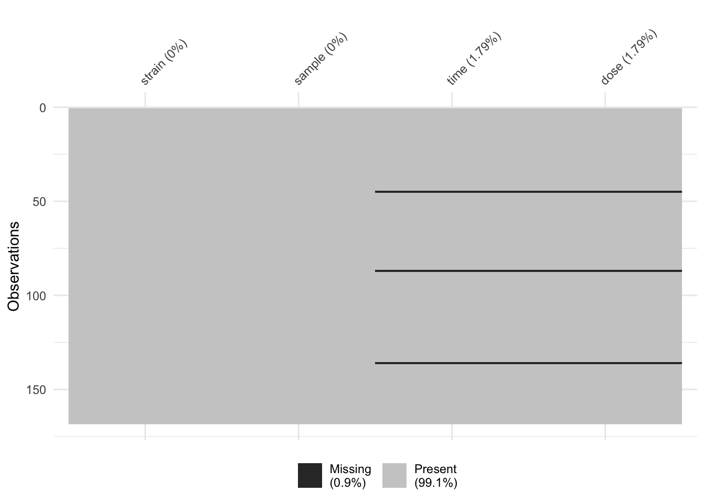

R, in particular the data.framedata.frame columnsdata.frame columnsdata.frame columnsdata.framedata.frame rowsdata.framedata.frame for next stage of analysisclass(c(TRUE, FALSE))## [1] "logical"class(1:5)## [1] "integer"class(rnorm(5))## [1] "numeric"class(c("a", "b"))## [1] "character"class(iris)## [1] "data.frame"library(tidyverse)## ── Attaching packages ──────────────────────────────────────────────── tidyverse 1.2.1 ──## ✔ ggplot2 3.2.1 ✔ purrr 0.3.3
## ✔ tibble 2.1.3 ✔ dplyr 0.8.3
## ✔ tidyr 1.0.0 ✔ stringr 1.4.0
## ✔ readr 1.3.1 ✔ forcats 0.4.0## ── Conflicts ─────────────────────────────────────────────────── tidyverse_conflicts() ──
## ✖ dplyr::filter() masks stats::filter()
## ✖ dplyr::lag() masks stats::lag()library(janitor)##
## Attaching package: 'janitor'## The following objects are masked from 'package:stats':
##
## chisq.test, fisher.testlibrary(readxl)
library(visdat)This is bad.
raw_data = readxl::read_xls("data/sample_data.xls")## New names:
## * `` -> ...2
## * `` -> ...3
## * `` -> ...4
## * `` -> ...5
## * `` -> ...6
## * … and 1 more problemhead(raw_data)## # A tibble: 6 x 7
## `Supplementary Table … ...2 ...3 ...4 ...5 ...6 ...7
## <chr> <chr> <chr> <chr> <chr> <chr> <chr>
## 1 Sample Treatment and … <NA> <NA> <NA> <NA> <NA> <NA>
## 2 <NA> <NA> <NA> <NA> <NA> <NA> <NA>
## 3 Strain Sample "Time\n… "Dose\… RIN [ ng/µL… 260/280
## 4 HW HW1 1.5 0 9.80000… 1425.97 2.12000…
## 5 HW HW2 1.5 0 9.80000… 2006.33… 2.10999…
## 6 HW HW3 1.5 0 9.90000… 1043.49 2.14000…This is good.
raw_data = readxl::read_xls("data/sample_data.xls", skip = 3)
head(raw_data)## # A tibble: 6 x 7
## Strain Sample `Time\n(hours)` `Dose\n(µg/kg)` RIN `[ ng/µL ]` `260/280`
## <chr> <chr> <chr> <chr> <chr> <chr> <chr>
## 1 HW HW1 1.5 0 9.80… 1425.97 2.120000…
## 2 HW HW2 1.5 0 9.80… 2006.33999… 2.109999…
## 3 HW HW3 1.5 0 9.90… 1043.49 2.140000…
## 4 HW HW4 1.5 100 9.59… 1931.45 2.109999…
## 5 HW HW5 1.5 100 10 524.259999… 2.129999…
## 6 HW HW6 1.5 100 9.5 2077.04 2.089999…This looks nice.
clean_col_data = raw_data %>%
janitor::clean_names()This selects columns.
sub_data = clean_col_data %>%
dplyr::select(strain, sample)
sub_data## # A tibble: 168 x 2
## strain sample
## <chr> <chr>
## 1 HW HW1
## 2 HW HW2
## 3 HW HW3
## 4 HW HW4
## 5 HW HW5
## 6 HW HW6
## 7 HW WW45
## 8 HW WW46
## 9 HW WW47
## 10 HW WW48
## # … with 158 more rowsThis selects 4 columns that we will use for our analysis.
colnames(clean_col_data) %>% tolower()## [1] "strain" "sample" "time_hours" "dose_µg_kg" "rin"
## [6] "ng_µ_l" "x260_280"select_columns = colnames(clean_col_data)[1:4]
select_columns## [1] "strain" "sample" "time_hours" "dose_µg_kg"sub_data = clean_col_data %>%
dplyr::select(one_of(select_columns))
sub_data## # A tibble: 168 x 4
## strain sample time_hours dose_µg_kg
## <chr> <chr> <chr> <chr>
## 1 HW HW1 1.5 0
## 2 HW HW2 1.5 0
## 3 HW HW3 1.5 0
## 4 HW HW4 1.5 100
## 5 HW HW5 1.5 100
## 6 HW HW6 1.5 100
## 7 HW WW45 3 100
## 8 HW WW46 3 100
## 9 HW WW47 3 100
## 10 HW WW48 3 100
## # … with 158 more rowssub_data = sub_data %>%
dplyr::rename(
time = time_hours,
dose = dose_µg_kg)mutate_data = sub_data %>%
dplyr::mutate(time = as.numeric(time),
dose = as.numeric(dose))## Warning: NAs introduced by coercion
## Warning: NAs introduced by coercionmutate_data %>%
visdat::vis_miss()
mutate_data %>%
dplyr::filter(is.na(time))## # A tibble: 3 x 4
## strain sample time dose
## <chr> <chr> <dbl> <dbl>
## 1 Strain Sample NA NA
## 2 Strain Sample NA NA
## 3 Strain Sample NA NAfilter_data = mutate_data %>%
dplyr::filter(!is.na(time))
filter_data = mutate_data %>%
dplyr::filter(complete.cases(time))
filter_data## # A tibble: 165 x 4
## strain sample time dose
## <chr> <chr> <dbl> <dbl>
## 1 HW HW1 1.5 0
## 2 HW HW2 1.5 0
## 3 HW HW3 1.5 0
## 4 HW HW4 1.5 100
## 5 HW HW5 1.5 100
## 6 HW HW6 1.5 100
## 7 HW WW45 3 100
## 8 HW WW46 3 100
## 9 HW WW47 3 100
## 10 HW WW48 3 100
## # … with 155 more rowsfilter_data %>%
group_by(strain) %>%
count()## # A tibble: 2 x 2
## # Groups: strain [2]
## strain n
## <chr> <int>
## 1 HW 85
## 2 LE 80filter_data %>%
group_by(strain) %>%
summarise(n())## # A tibble: 2 x 2
## strain `n()`
## <chr> <int>
## 1 HW 85
## 2 LE 80filter_data %>%
group_by(strain, dose) %>%
count()## # A tibble: 18 x 3
## # Groups: strain, dose [18]
## strain dose n
## <chr> <dbl> <int>
## 1 HW 0 24
## 2 HW 0.001 4
## 3 HW 0.01 4
## 4 HW 0.1 4
## 5 HW 1 4
## 6 HW 10 4
## 7 HW 100 33
## 8 HW 1000 4
## 9 HW 3000 4
## 10 LE 0 27
## 11 LE 0.001 4
## 12 LE 0.01 4
## 13 LE 0.1 4
## 14 LE 1 4
## 15 LE 10 4
## 16 LE 50 4
## 17 LE 100 25
## 18 LE 1000 4filter_data %>%
group_by(strain, dose, time) %>%
count()## # A tibble: 36 x 4
## # Groups: strain, dose, time [36]
## strain dose time n
## <chr> <dbl> <dbl> <int>
## 1 HW 0 1.5 3
## 2 HW 0 19 7
## 3 HW 0 96 5
## 4 HW 0 240 5
## 5 HW 0 384 4
## 6 HW 0.001 19 4
## 7 HW 0.01 19 4
## 8 HW 0.1 19 4
## 9 HW 1 19 4
## 10 HW 10 19 4
## # … with 26 more rowswrite_csv(filter_data, path = "data/clean_sample_data.csv")sessionInfo()## R version 3.6.1 (2019-07-05)
## Platform: x86_64-apple-darwin15.6.0 (64-bit)
## Running under: macOS Mojave 10.14.6
##
## Matrix products: default
## BLAS: /Library/Frameworks/R.framework/Versions/3.6/Resources/lib/libRblas.0.dylib
## LAPACK: /Library/Frameworks/R.framework/Versions/3.6/Resources/lib/libRlapack.dylib
##
## locale:
## [1] en_AU.UTF-8/en_AU.UTF-8/en_AU.UTF-8/C/en_AU.UTF-8/en_AU.UTF-8
##
## attached base packages:
## [1] stats graphics grDevices utils datasets methods base
##
## other attached packages:
## [1] visdat_0.5.3 readxl_1.3.1 janitor_1.2.0 forcats_0.4.0
## [5] stringr_1.4.0 dplyr_0.8.3 purrr_0.3.3 readr_1.3.1
## [9] tidyr_1.0.0 tibble_2.1.3 ggplot2_3.2.1 tidyverse_1.2.1
##
## loaded via a namespace (and not attached):
## [1] tidyselect_0.2.5 xfun_0.10 haven_2.1.1 lattice_0.20-38
## [5] snakecase_0.11.0 colorspace_1.4-1 vctrs_0.2.0 generics_0.0.2
## [9] htmltools_0.4.0 yaml_2.2.0 utf8_1.1.4 rlang_0.4.1
## [13] pillar_1.4.2 glue_1.3.1 withr_2.1.2 modelr_0.1.5
## [17] lifecycle_0.1.0 munsell_0.5.0 gtable_0.3.0 cellranger_1.1.0
## [21] rvest_0.3.4 evaluate_0.14 labeling_0.3 knitr_1.25
## [25] fansi_0.4.0 broom_0.5.2 Rcpp_1.0.2 scales_1.0.0
## [29] backports_1.1.5 jsonlite_1.6 hms_0.5.2 digest_0.6.22
## [33] stringi_1.4.3 grid_3.6.1 cli_1.1.0 tools_3.6.1
## [37] magrittr_1.5 lazyeval_0.2.2 crayon_1.3.4 pkgconfig_2.0.3
## [41] zeallot_0.1.0 ellipsis_0.3.0 xml2_1.2.2 lubridate_1.7.4
## [45] assertthat_0.2.1 rmarkdown_1.16 httr_1.4.1 rstudioapi_0.10
## [49] R6_2.4.0 nlme_3.1-141 compiler_3.6.1